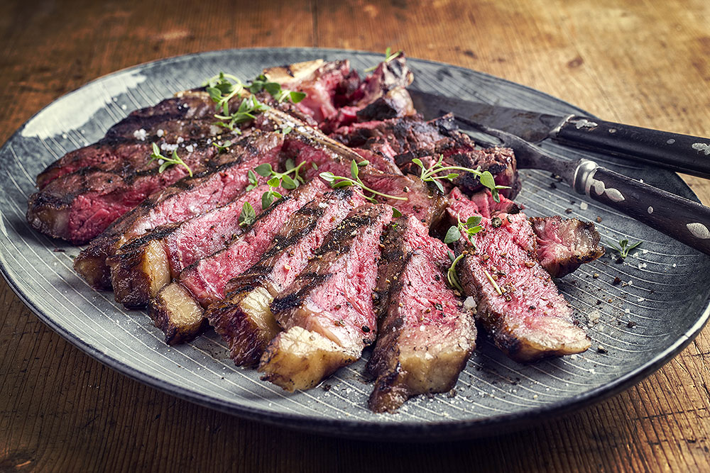

Bistecca Fiorentina

Description
Bistecca Fiorentina is a culinary masterpiece, an emblem of Tuscan gastronomy that transcends a mere dish to become an event. Sourced from the prized Chianina breed of cattle, a lineage revered for its tender and flavorful meat, this steak is a testament to the art of simplicity and quality.
The cut itself is a work of precision, a thick, two-inch slab of loin that includes the bone, creating a distinct "T-bone" shape. This central bone is not just for aesthetics; it conducts heat with remarkable efficiency, ensuring the meat cooks evenly while imparting a subtle depth of flavor.
Ingredients
- 1 (2-3 inch thick) bone-in T-bone or porterhouse steak (ideally Chianina beef)
- Coarse sea salt, to taste
- Freshly cracked black pepper, to taste
- Extra virgin olive oil, for drizzling
- Optional: Fresh rosemary or sage sprigs
Instructions
Preparation
- Bring to Room Temperature: Remove the steak from the refrigerator at least two to three hours before cooking. This is a crucial step to ensure the steak cooks evenly.
- Pat Dry: Thoroughly pat the steak dry on all sides with a paper towel. A dry surface is essential for achieving a perfect, flavorful crust.
Cooking
- Grill the First Side: Place the steak directly over the hottest part of the grill. Do not move it. Cook for 5-7 minutes, until a deep, dark crust has formed.
- Flip: Using tongs, flip the steak to the other side. Cook for another 5-7 minutes. The total cooking time should be around 10-15 minutes, depending on the thickness of the steak and the intensity of the heat.
- Rest on the Bone: For the final moments, stand the steak on its bone, right side up, directly on the grill. This allows the heat to gently cook the meat near the bone, where it is thickest.
Finishing
- Rest the Steak: Transfer the steak to a cutting board. Do not cut into it immediately. Let it rest for 10 minutes. This allows the juices to redistribute, ensuring every bite is tender and flavorful.
- Slice and Season: Carve the steak by slicing the meat off the bone and cutting it into thick slices. Arrange the slices back around the bone on a platter.
- Final Touches: Generously sprinkle the slices with coarse sea salt and freshly cracked black pepper. Drizzle with a high-quality extra virgin olive oil. Serve immediately.
Home